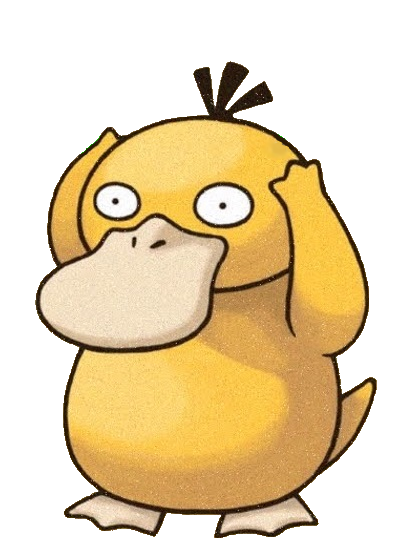

JOUER
JOUEUR 2
REGLES DU JEU:
VOUS POUVEZ CHOISIR DE JOUER CONTRE UN BOT (MODE 1 JOUEUR) OU A 2 (MODE 2 JOUEURS). CLIQUEZ ENSUITE SUR LE BOUTON PLAY.
UNE FOIS LA PARTIE LANCEE, LE JOUEUR 1 CHOISIT COMBIEN DE BILLES IL VEUT PARIER. POUR CELA, RIEN DE PLUS SIMPLE: APPUYER SUR LA BILLE AVEC LE NUMERO CORRESPOND AU NOMBRE DE BILLES VOULUES.
LE TOUR DU JOUEUR 2 SE DECLENCHE ALORS. CELUI-CI DOIT CHOISIR S'IL PENSE QUE LE NOMBRE DE BILLES DANS VOTRE MAIN EST UN NOMBRE PAIR OU IMPAIR.
S'IL GAGNE, ALORS IL REMPORTE LE NOMBRE DE BILLES QUE LE JOUEUR 1 AVAIT DANS SA MAIN. DANS L'AUTRE CAS, IL DOIT DONNER AU JOUEUR 1 CE MEME NOMBRE DE BILLES.
LE TOUR DE JEU FINIT, ON INVERSE LES ROLES: C'EST AU JOUEUR 2 DE CHOISIR LE NOMBRE DE BILLES ET AU JOUEUR 1 DE DEVINER SI C'EST PAIR OU IMPAIR.
LA PARTIE SE TERMINE LORSQUE LE NOMBRE DE BILLES D'UN JOUEUR TOMBE A 0: CE JOUEUR A DONC PERDU.
SI VOUS JOUEZ CONTRE LE BOT, ATTENDEZ QU'IL CHOISISSE AVANT DE JOUER.